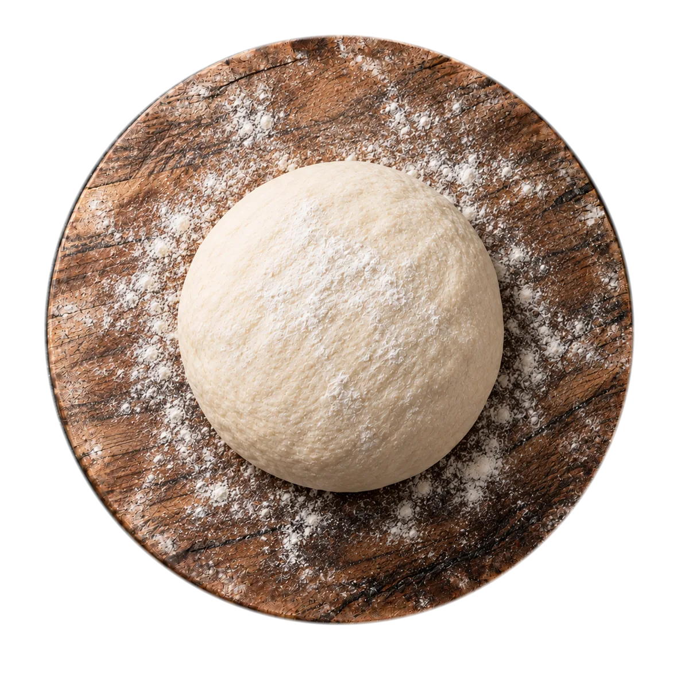
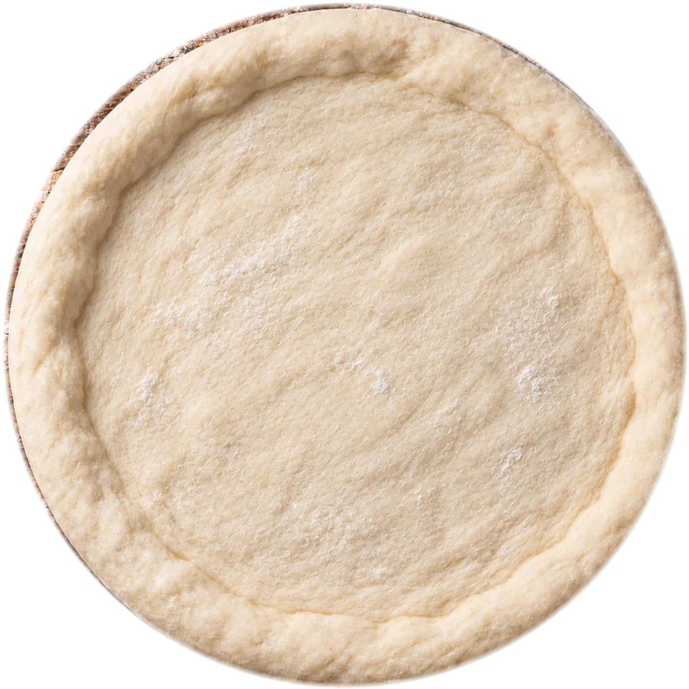
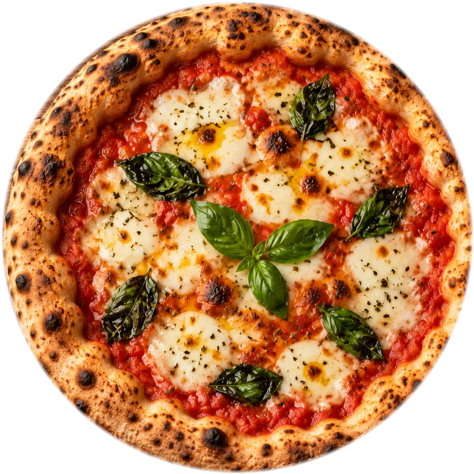

antica pizzeria napoletana
Peppè
Pizza napoletana. Quarantotto ore di lievitazione, novanta secondi di forno a legna.
scorri e guardala nascere ↓01 · l'impasto
Farina, acqua, sale. E quarantotto ore di pazienza.
Lievito madre e una lunga maturazione: per questo la nostra pizza è leggera.
02 · la stesura
Stesa a mano. Mai col mattarello.
L'aria resta nel cornicione, che in forno si gonfia e si macchia di leopardo.
03 · il pomodoro
San Marzano, dal centro verso il bordo.
Schiacciato a mano, con un pizzico di sale. Nient'altro.
04 · la mozzarella
Fior di latte, strappato a mano.
Arriva ogni mattina e si asciuga un'ora prima di finire sulla pizza.
05 · il basilico
Basilico, appena colto.
E un filo d'olio extravergine, a crudo.
06 · il forno
Quattrocentottanta gradi. Novanta secondi.
Il nostro forno a legna fa il resto.
ecco
Adesso è vera.
La Margherita, come la facciamo ogni sera.



prima di ordinarla
Adesso girala.
È la nostra Margherita, in 3D. Trascinala col dito o col mouse e guardala da ogni lato, cornicione compreso.
↔ trascina per girare
ordina da casa
La pizza,
a casa tua.
Scegli le pizze, decidi l'orario e passa a ritirarla calda. Oppure fattela portare. Provalo qui accanto.
- Ordini onlineritiro o consegna, senza telefonate e senza attese
- Menu al tavoloinquadri il QR e il menu si apre sul telefono
- Sempre aggiornatopizza del giorno e prezzi si cambiano in un attimo
Il QR che trovi sul tavolo: inquadralo e sfoglia il menu.
dove siamo
Vieni a trovarci.
Via Esempio 48 · La tua città
Da martedì a domenica, 19:00 – 23:30
Sabato e domenica anche a pranzo
Lunedì
«La pizza buona non ha fretta: la nostra riposa due giorni prima di arrivare al tuo tavolo.»— Peppè, pizzaiolo